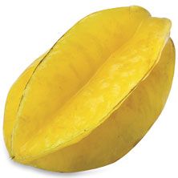
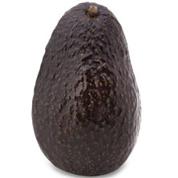
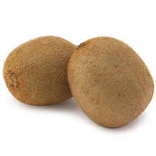

|
|
|  |
Carambola, or star fruit, is the fruit of Averrhoa carambola, a species of tree native to
Indonesia, the
Philippines, and throughout Malesia. The fruit is commonly consumed throughout Southeast Asia,
the South
Pacific, Micronesia, and parts of East Asia. The tree is cultivated throughout non-indigenous
tropical
areas. |
|  |
The Hass avocado, sometimes marketed as the Bilse avocado, is a cultivar of avocado with dark
green-colored,bumpy skin. It was first grown and sold by Southern California mail carrier and
amateur
horticulturist Rudolph Hass, who also gave it his name. The Hass avocado is a large-sized fruit
weighing
200 to 300 grams. |
|  |
Kiwifruit, or Chinese gooseberry, is the edible berry of several species of woody vines in the
genus
Actinidia. The most common cultivar group of kiwifruit is oval, about the size of a large hen's
egg. It
has a fibrous, dull greenish-brown skin and bright green or golden flesh with rows of tiny,
black,
edible seeds. |